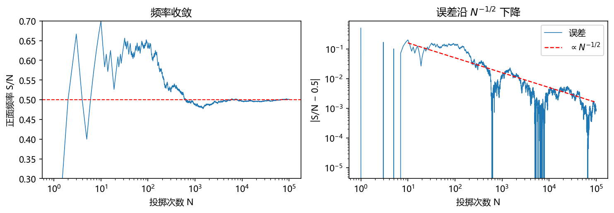
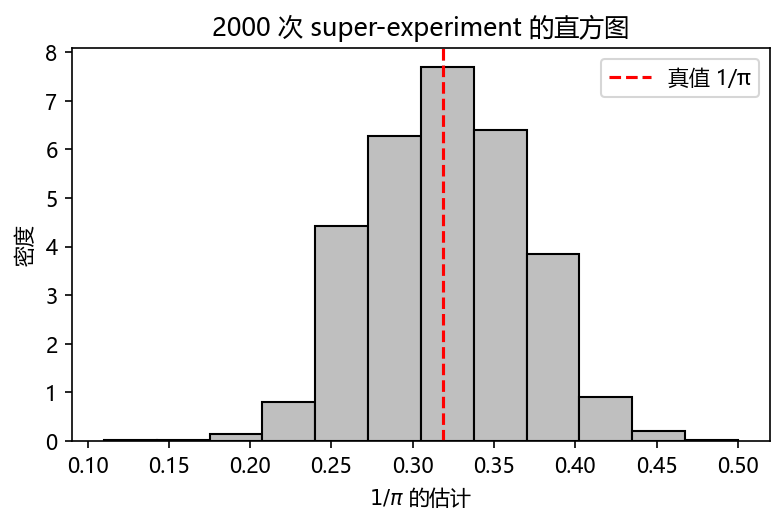
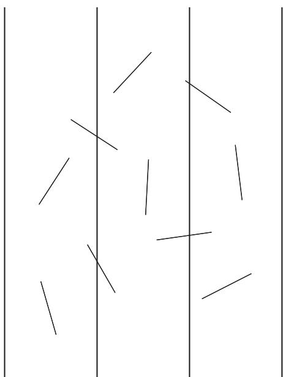
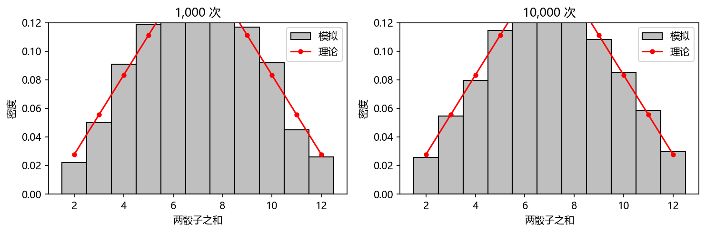
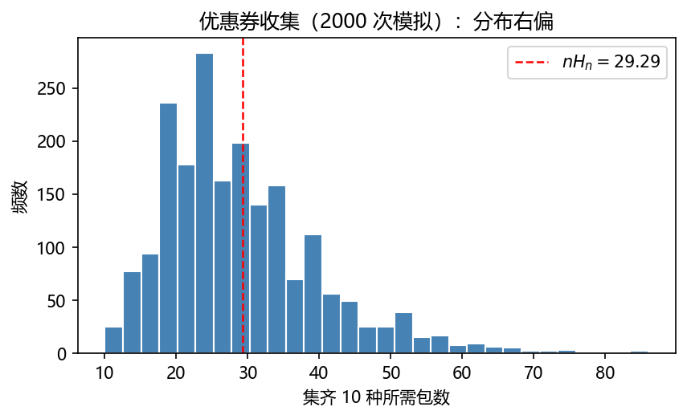

第 1 章 初识蒙特卡罗方法#
本章解决：随机模拟（Monte Carlo method，蒙特卡罗方法）是什么、从哪来、能干什么。一个中心思想——用样本均值估计总体均值（use sample means to estimate population means），两种视角——把过程"演"出来的模拟（simulation）与把答案写成积分再"抽"出来的求积（quadrature），五个经典例子跑通"建模 → 抽样 → 记分 → 统计"的完整闭环。 对照教材：Shonkwiler & Mendivil《Explorations in Monte Carlo Methods》§1.1、§1.4（本章主线：投针、直方图、样本路径、hit-or-miss、优惠券、洗牌）；Dunn & Shultis《Exploring Monte Carlo Methods》§1.1–1.6 补充（求积视角的系统表述与蒙特卡罗简史）。
"蒙特卡罗"是摩纳哥的著名赌城。用赌城为一种数值方法命名，是因为两者共享同一个数学骨架：单次结果随机，大量重复后规律浮现。抛一次硬币是随机的，但抛十万次后正面频率几乎必然贴近 0.5；赌局单把输赢难料，但赌场靠大数定律稳赚。蒙特卡罗方法把这件事反过来用：只要一个量的答案能表示成某个随机试验的平均值，就可以用计算机模拟这个试验，用平均值把答案"估"出来。
| 关键词 | 事实 |
|---|---|
| 本质 | 用样本均值 \(\bar z=\frac1N\sum_{i=1}^N z_i\) 估计期望 \(\langle z\rangle\) |
| 两大理论支柱 | 大数定律（保证收敛）与中心极限定理（给出误差），第 2 章 |
| 两类视角 | 模拟（把过程"演"出来）/ 求积（把答案写成积分再"抽"出来） |
| 收敛速度 | 误差 \(O(N^{-1/2})\)，与维数无关——高维问题的杀手锏 |
| 两个前提 | 好用的均匀随机数（第 3 章）、从分布抽样的方法（第 4 章） |
本章代码：nb/ch01.ipynb（NumPy 实跑；随机种子 2024，从头到尾复跑数字可复现；结果图均标注"代码实跑"）。任何随机模拟的骨架都是同一张流程图：
1.0 本章导图#
1.1 什么是蒙特卡罗方法#
Dunn & Shultis §1.1 的回答只有一句话：蒙特卡罗本质上是用样本均值估计总体均值的方法论。它得名于 1946 年前后（见 §1.3），但骨架可以朴素到不需要计算机——
最原始的版本：跑一个只有"成功（1）/失败（0）"两种结果的实验，重复 \(N\) 次（每次称为一条 history 或一次 trial），成功次数 \(S\) 除以 \(N\)，得到频率 \(S/N\)。\(N\) 足够大时，\(S/N\) 就是成功概率的好近似。这就是把"比特"变成有意义数值的全过程；离散版本推广到连续版本后，每条 history 产生一个（或一组）浮点数，统计方式不变：总和除以试验数。
更广的版本：Dunn & Shultis 强调，蒙特卡罗是一种高度灵活的数值求积（numerical quadrature）程序，既能处理直接的（direct）问题也能处理逆的（inverse）问题。它最迷人的地方是允许把直觉引进解法——只要遵守几条简单规则，同一个问题可以有许多种蒙特卡罗解法，研究者可以拿不同的方案做实验。因为"简单技巧解复杂问题"所以强大，因为"灵活"所以有趣。
先用最小的例子建立体感。抛一枚均匀硬币：\(p=0.5\)。想"知道"这个 \(p\)，不必做任何分析——直接做试验：抛 \(N\) 次、数正面次数 \(S\)、用频率 \(S/N\) 作为估计。计算机上，一次抛硬币只需一个均匀随机数：取 \(u\sim U(0,1)\)，约定 \(u<0.5\) 记为"正面"（均匀随机数本身怎么造，是第 3 章的主题）。
rng = np.random.default_rng(2024) # 随机数发生器
N = 100_000
flips = rng.random(N) < 0.5 # N 个均匀随机数，< 0.5 记"正面"
freq = np.cumsum(flips) / np.arange(1, N + 1) # 逐步累积的频率 S/N

图里有两件事值得盯住：
- 频率确实稳定到概率：\(N=100\) 时频率 0.6300，偏差约 0.13；\(N=100\,000\) 时频率 0.5009，偏差不到 0.001。
- 收敛速度是 \(N^{-1/2}\) 量级：右图中误差点云贴着 \(1/\sqrt{N}\) 参考线下滑。由此得到贯穿全书的成本公式：误差要减半，样本量要翻四倍。为什么恰好是 \(N^{-1/2}\)？第 2 章的大数定律回答"为什么稳定"，中心极限定理回答"为什么是这个速度"。
1.2 第一个蒙特卡罗实验：蒲丰投针#
历史上第一个"用随机试验算出一个确定量"的实验，比计算机早了 170 年。1777 年，法国博物学家 Buffon（布丰）提出：平面上画一组间距为 \(D\) 的平行线，随机投一枚长 \(L\le D\) 的针，针与某条线相交的概率是多少？ 答案里竟然藏着 \(\pi\)。

推导（S&M §1.1.1，面积比版本，逐步拆开）：
① 随机性来自哪：针落下后由两个量决定——中点到最近一条线的距离 \(X\) 与针和线的夹角 \(\Theta\)。由均匀性，\(0\le X\le \frac D2\)、\(0\le \Theta\le \frac\pi2\)，且点 \((X,\Theta)\) 等可能地落在矩形 \([0,\frac d2]\times[0,\frac\pi2]\) 内。
② 相交条件：针在垂直于线方向上的投影长为 \(L\sin\Theta\)。中点距最近线 \(X\)，针越过该线 \(\iff X\le \frac L2\sin\Theta\)。
③ 几何概率：相交概率 = "相交条件围出的面积"占"整个矩形"的比例：
④ 解出 \(\pi\)：取 \(d=2L\)，则 \(P_{cut}=1/\pi\)。实验上 \(P_{cut}\) 用频率 \(\hat P_{cut}=n_c/n_d\)（\(n_d\) 次投针、\(n_c\) 次相交）代替，得
拓展：另一种推导与长针公式
Dunn & Shultis 例 1.1 用"角度加权"推出同一结果：固定夹角 \(\theta\sim U(0,\pi)\) 时相交概率为 \(L\sin\theta/D\)，对 \(\theta\) 积分得 \(P_{cut}=\frac{L}{\pi D}\int_0^\pi\sin\theta\,\mathrm d\theta=\frac{2L}{\pi D}\)。例 1.2 则用"针端落点 + 以端点为圆心的弧长比例"推导，好处是可以推广到长针 \(L>D\)，此时 \(P_{cut}=\dfrac{2}{\pi D}\Big[D\arccos\dfrac{D}{L}+L-\sqrt{L^2-D^2}\Big]\)。
计算机模拟。利用对称性把范围折半：中点到最近线距离 \(d\sim U(0,D/2)\)、夹角 \(\theta\sim U(0,\pi/2)\)，相交 \(\iff d\le \frac L2\sin\theta\)——与上面的推导完全等价，只是把"一端"换成"中点"。
D, L = 1.0, 0.6
N = 100_000
d = rng.uniform(0, D/2, N) # 中点到最近线的距离
th = rng.uniform(0, np.pi/2, N) # 针与线的夹角
hit = d <= (L/2) * np.sin(th) # 相交判据
p_hat = hit.mean() # 相交频率
pi_hat = 2 * L / (p_hat * D)
# P_cut = 0.3821（理论 2×0.6/π = 0.3820），π̂ = 3.1402



十万次投针才准到 1 位小数。慢，是朴素蒙特卡罗的通病；但也要看到它的"便宜"——每条 history 只是一个 0/1 判据，全程只消耗均匀随机数。如何治慢，第 5 章（方差缩减）见。
S&M 还给了一个有趣玩法（其 Algorithm 1.2）：不知道 \(\pi\) 也能估 \(\pi\)——模拟里需要生成角度 \(\theta\)，用 \(\pi\) 的当前估计值来生成；每轮模拟结束把新估计值回代。这是一个收敛的不动点迭代（convergent fixed-point iteration），从 \(\pi=1\) 出发也能收敛到真值。
1.3 一部简史#
Dunn & Shultis §1.2 把来龙去脉讲得很完整，压缩成一张时间线：
| 年代 | 人物 / 事件 | 意义 |
|---|---|---|
| 1689/1713 | Jacob Bernoulli 提出大数定律（《猜测术》身后出版） | 蒙特卡罗的数学根基，第 2 章 |
| 1777 | Buffon 投针问题 | 第一个"随机试验算确定量" |
| 1786 | Laplace 指出可用投针估计 \(\pi\) | 几何概率 → 数值应用 |
| 19 世纪末 | Rayleigh 评论大数定律；Kelvin 用抽签数字做气体动理论；"Student"（Gosset）用 3000 名罪犯身高/中指长研究 \(t\) 分布 | 随机抽样进入严肃科学 |
| 1901 | Lazzarini 宣称投针 3408 次得 \(\pi\) 准到 7 位 | 见下方"好得可疑" |
| 1930 年代 | Fermi 在罗马用统计抽样预言中子慢化实验（从未发表） | 蒙特卡罗思想的前奏 |
| 1945–47 | Ulam、von Neumann、Metropolis 在洛斯阿拉莫斯用 ENIAC 做统计模拟；von Neumann 致 Richtmyer 的信正式提议用统计方法解中子扩散 | 现代蒙特卡罗方法的起点 |
| 1949 | Metropolis & Ulam 发表《The Monte Carlo Method》，Metropolis 以赌城命名 | 方法得名 |
| 1956–66 | Kahn 备忘录（抽样、方差缩减）；Cashwell & Everett、Hammersley & Handscomb 专著 | 方法体系化 |
| 1970s–今 | 输运理论专著与通用代码（EGS、GEANT4、MCNP，见 D&S 附录 D）；金融、气象、统计力学、贝叶斯统计全面开花 | 蒙特卡罗成为通用数值基础设施 |
拓展：好得可疑的 Lazzarini
1901 年 Lazzarini 宣称用 \(L/D=5/6\) 的针投 3408 次得 1808 次相交，\(\hat\pi\approx3.1415929\)，准到 7 位有效数字。Rao 指出这好得离谱：与 \(\pi\) 最接近的小整数分数是 \(355/113\)，而按该分数反推，\(\hat\pi\) 达到这个精度要求 \(n_c\) 必须是 113 的倍数——1808 恰是 \(16\times113\)。最可能的解释是：他反复投 213 针一批，凑到某批恰好出现 \(113k\) 次相交就停手。这反而生动地说明蒙特卡罗的诚实之处：单次结果有运气成分，程序化的批量模拟没有。
1.4 求积视角：把答案写成期望#
1.4.1 期望形式的积分与"随机节点"求积#
考虑依赖于随机变量 \(x\) 的函数 \(z(x)\)，其均值（期望）为
其中 \(f(x)\,\mathrm dx\) 是 \(x\) 落在 \(x\) 附近的 \(\mathrm dx\) 内的概率（\(f\) 是第 2 章正式定义的概率密度函数）。大量物理问题都归结为这种积分。解析积不出时，最常用的手段是数值求积（quadrature）——用有限加权和逼近积分：
其中 \(x_i\) 称为求积节点（abscissas），\(w_i\) 称为权重（weights）。Riemann 积分的定义本身就是这种形式（节点取子区间中点、权重 \(\Delta x_i\)）；Gauss–Legendre 等经典求积的节点与权重是预先规定的。
蒙特卡罗求积的独门之处：节点随机抽取。按密度 \(f(x)\) 抽 \(N\) 个值 \(x_i\) 作节点，直接取 \(z\) 的算术平均：
对照一般求积式，相当于权重 \(w_i=\dfrac{1}{N f(x_i)}\)。求和号里不含 \(f\)——密度的影响全部藏在"节点怎么抽"里。第 2 章将证明 \(N\to\infty\) 时 \(\bar z\to\langle z\rangle\)。
一般定积分怎么套？欲求 \(I=\int_a^b g(x)\,\mathrm dx\)，把它改写成期望：令 \(f(x)=\frac{1}{b-a}\)（\([a,b]\) 上的均匀密度），则
几何意义：平均高度 × 底边长。Dunn & Shultis 进一步指出：任何"期望"型量（比如物体的重心坐标 \(\langle x\rangle=\int xm\,\mathrm dx\big/\int m\,\mathrm dx\)）都能通过归一化 \(M=\int h\,\mathrm dx\) 改写成式 (1.8) 的形状——原则上任何定积分都可以交给蒙特卡罗。
1.4.2 hit-or-miss：向目标撒点#
S&M §1.4 给出更直观的求积法。求 \(\theta=\int_a^b f(x)\,\mathrm dx\)（\(f\ge0\)），取 \(M\ge\max f\)，向矩形容器 \([a,b]\times[0,M]\) 均匀撒点。命中目标面积的概率 = 目标面积 / 容器面积 \(=\theta/[M(b-a)]\)，于是 \(n\) 个点中命中 \(h\) 个时
这就是 hit-or-miss 法（打中与否法）——蒲丰投针本质上正是它。高维时思想不变：把目标区域装进一个易算体积的"容器"，撒点、判中、算比例。用它从零估计 \(\pi\)：四分之一单位圆面积 \(\pi/4\) 装在单位方形里，\(\pi\approx 4\,h/n\)。
N = 4000
x, y = rng.random(N), rng.random(N)
inside = x**2 + y**2 <= 1
pi_hit = 4 * inside.mean()
# π̂ = 3.1420（N = 4000）

1.4.3 两种求积法同场竞技#
对无初等原函数的 \(I=\int_0^1 e^{-x^2}\mathrm dx\)（真值 0.7468241），hit-or-miss 与平均值法（sample-mean，即 §1.4.1 的期望法）对比：
exact = 0.7468241328124271
Nq = 100_000
xx_, yy_ = rng.random(Nq), rng.random(Nq)
hm = (yy_ <= np.exp(-xx_*xx_)).mean() # 投点法（容器面积 1）
mean_est = np.exp(-rng.random(Nq)**2).mean() # 平均值法
# 投点法 = 0.74868，平均值法 = 0.74610，真值 = 0.74682

两法都按 \(N^{-1/2}\) 收敛，差别在常数：平均值法的每条 history 记连续分数 \(g(x_i)\)，比 hit-or-miss 的 0/1 分数携带更多信息，方差更小（第 5 章给出定量比较与一整套"少算几倍"的手段）。
拓展：为什么说蒙特卡罗是高维问题之王
把求积看成"节点 + 权重"最能看清本质。经典求积的节点是确定的，精度随维数 \(m\) 以 \(N^{-1/m}\) 恶化——100 维时上亿个节点都毛毛雨；蒙特卡罗的节点是随机的，误差恒为 \(N^{-1/2}\)，与维数无关（Mosegaard & Sambridge）。维数越高，随机节点越占优：这是蒙特卡罗在统计物理（配分函数）、金融（多资产期权）、贝叶斯推断（高维后验）里不可替代的根本原因。
1.5 模拟视角：直方图与样本路径#
1.5.1 蒙特卡罗是"虚拟实验"#
很多问题根本不必显式写成积分。S&M 的例子：想估一张不规则国土的面积，往地图上扔飞镖就行——命中境内的比例 × 图幅面积，全程无需提"积分"二字（若嫌随机，也可以铺规则网格数格点，属于"不抽样的模拟"，第 5 章会以系统抽样的名义重逢）。同样，高能物理学家在建造昂贵探测器之前先"在计算机里做实验"：模拟宇宙线与大气、实验室、探测器的相互作用，验证设计是否如预期——建成后，模拟还负责解释探测器采到的数据。
关键洞察：这类模拟中，感兴趣的量 \(x\) 服从某个未知分布 \(h(x)\)。即使 \(h\) 完全写不出来，只要底层过程规则已知，蒙特卡罗不仅能估出均值 \(\langle x\rangle\)，还能把 \(h(x)\) 本身估出来。估分布的工具就是直方图。
1.5.2 直方图：频率与密度#
把取值范围切成首尾相接的 bin（小区间 \([x_{k-1},x_k)\)），数每个 bin 里落了多少个样本，画条形图——这是频率直方图（frequency histogram）。要让不同 bin 宽、不同样本量的直方图可以相互比较、并且能和理论密度曲线叠画，需要密度直方图（density histogram）：把高度乘常数 \(c\) 使条形下面积和为 1：
其中 \(f_k\) 为第 \(k\) 个 bin 的频数。等宽 bin 时 \(c=1/(N\Delta x)\)。密度直方图是分布 \(h(x)\) 的近似——样本量越大、bin 越细，近似越好。
super-experiment（超级实验）：想给单次估计配上误差棒，把基本实验打包重复。以投针为例：100 次投针打包成一个实验（估计 \(P_{cut}=1/\pi\)，取 \(d=2L\) 特例），重复 2000 次得到 2000 个估计值，画密度直方图：

1.5.3 样本路径：看过程而不是只看终值#
把每次试验的累计结果连成折线——样本路径（sample path）。经典例子：赌徒每局 ±1 美元（胜率 50%），本金 100，对手（庄家）2000，一直玩到一方破产。单条路径的时长差异巨大（有几局就完的，也有 150 万局还在拉的）：

1.6 三个经典小实验#
1.6.1 蒙提霍尔问题（S&M 习题 23）#
三扇门，一扇后面是汽车，两扇是山羊。你先选一扇（不打开）；知道汽车位置的主持人从剩下两扇中打开一扇有山羊的门；最后给你一次机会：坚持原选择，还是换到另一扇未开的门？
最常见的直觉是"剩两扇门，各 \(1/2\)"。错在忽略了主持人行为携带的信息：他开哪扇门不是随机的——从不打开你选的门，也从不打开汽车所在的门。把全部等可能情形列出来（初选与汽车位置独立，各 \(1/3\)）：
| 你的初选（概率） | 主持人能开的门 | 换门的结果 | 不换的结果 |
|---|---|---|---|
| 汽车（\(1/3\)） | 另两扇任一（都是山羊） | 必输 | 赢 |
| 山羊 A（\(1/3\)） | 只能开山羊 B | 赢（换到汽车） | 输 |
| 山羊 B（\(1/3\)） | 只能开山羊 A | 赢（换到汽车） | 输 |
换门获胜概率 \(=\frac13\cdot 0+\frac13\cdot 1+\frac13\cdot 1=\frac23\)，不换只有 \(\frac13\)。换，胜率翻倍。 按 S&M 习题 23 的"标准规则"逐条模拟 10 万局验证：
def monty_hall(switch, trials=100_000):
car = rng.integers(0, 3, trials) # 汽车所在门
pick = rng.integers(0, 3, trials) # 选手初始选择
opened = (pick + rng.integers(1, 3, trials)) % 3 # 从另外两扇随机开一扇
opened = np.where(opened == car, 3 - pick - opened, opened)
# ↑ 主持人规则：若误开到汽车门，改开另一扇（必为山羊）
final = np.where(switch, 3 - pick - opened, pick)
return float(np.mean(final == car))
stay, swap = monty_hall(False), monty_hall(True)
# 不换：0.3321（理论 1/3）；换：0.6684（理论 2/3）

模拟代码里唯一"聪明"的一行是 opened 的修正：它把"主持人永远开山羊门"这条规则写进了程序。删掉这行（让主持人可能开到汽车），问题就变了，答案也随之改变——模拟逼着你把规则的每个细节写清楚，这本身就是建模训练。严格的条件概率推导在第 2 章学完 Bayes 公式后再回看。
1.6.2 优惠券收集（S&M §1.4）#
零食袋里随机附赠 \(n\) 种优惠券之一（每种等可能），集齐全部 \(n\) 种平均要买多少包？ 纯模拟问题：买一包 = 抽一个均匀随机数，集齐 = 每种至少抽到一次。
n, trials = 10, 2000
counts = np.empty(trials, dtype=int)
for t in range(trials):
seen, d = set(), 0
while len(seen) < n:
seen.add(int(rng.integers(n)))
d += 1
counts[t] = d
# 模拟均值 = 29.07，理论 n·H_n = 29.29

理论值从哪来？ 把过程按"已集齐 \(k\) 种"分阶段：已集 \(k\) 种后，再买一包抽到新种类的概率是 \(p_k=(n-k)/n\)，等到新券平均需要 \(1/p_k=n/(n-k)\) 包（"重复试验直到首次成功"的平均等待次数）。各阶段相加：
其中 \(H_n\) 为调和数。"平均要等多少包"的严格身份是几何分布的期望，第 2 章正式定义后这个推导就完全严格了。
拓展
\(n\) 很大时 \(nH_n\approx n\ln n+\gamma n\)（\(\gamma\approx 0.5772\)，欧拉常数）。想集齐 50 种，平均要约 \(50(\ln 50+0.577)\approx 225\) 包——"最后几种最难凑"的日常体验，被 \(\ln n\) 项精确刻画。
1.6.3 洗牌与等可能排列（S&M §1.4 / 习题 22）#
纸牌游戏里所有随机性都来自洗牌。洗牌 = 生成 \(\{1,\dots,52\}\) 的一个排列；"公平的洗牌"要求 52! 种排列等可能。S&M 给出满足要求的就地算法（即经典的 Fisher–Yates 洗牌）：为位置 \(k=1,2,\dots,m\) 依次选牌时，从剩下的牌中等可能选一张与当前位置交换——还能方便地只洗前 \(m\) 张。
def shuffle(perm, biased=False):
n = len(perm)
for i in range(n):
j = int(rng.integers(0, n)) if biased else int(rng.integers(i, n))
perm[i], perm[j] = perm[j], perm[i]
return perm
"等可能"是能被检验的：模拟 5 万次洗 5 张牌，统计"0 号牌最终落位"的频率。正确的 Fisher–Yates 给出均匀分布；一个貌似合理的错误版——每一步都从全范围 \([0,n)\) 选 \(j\) 交换（S&M 习题 22 问的就是它行不行）——落位明显偏向中间位置：

拓展：为什么'全范围交换'有偏
\(n\) 张牌时错误算法产生的排列共有 \(n^n\) 条等可能的"交换路径"，但排列只有 \(n!\) 种——\(n^n\) 不能被 \(n!\) 整除，某些排列必然被更多路径命中。Fisher–Yates 的路径数为 \(n!\)（第 \(i\) 步剩 \(n-i\) 种选择），恰好一一对应，所以均匀。第 3 章的 MCMC 会把"如何在一个巨大状态空间上构造等可能/目标分布的抽样"发展成完整方法论。
1.7 一般思路与路线图#
回头看，本章的例子是同一件事的几个变体，全部落在两大视角之一：
| 视角 | 做法 | 本章例子 |
|---|---|---|
| 模拟（simulation） | 把随机过程按规则直接"演"出来，统计结果 | 蒙提霍尔、优惠券、投针、赌徒路径 |
| 求积（quadrature） | 把答案写成期望/积分，抽样本估计 | 频率估概率、hit-or-miss、平均值法 |
面对新问题，先问三个问题：
- 答案能写成什么量的期望或概率？（求积视角的入口）
- 支配随机性的分布是什么？——第 3、4 章解决"随机数从哪来""怎么从分布抽样"。
- 每条 history 记什么分？——记分规则越"信息丰富"，方差越小（第 5 章）。
最后算一笔误差账：标准误差 \(\propto N^{-1/2}\)，精度提高一位有效数字，计算量要乘 100。所以实战蒙特卡罗的三大课题——好的随机数（第 3 章）、好的抽样（第 4、6 章）、好的方差缩减（第 5 章）——恰好就是本笔记接下来的路线图；第 6–7 章把抽样推广到"分布只能算不能抽"的 MCMC 与贝叶斯推断，第 8–12 章是随机游走、优化、逆问题、线性算子方程与粒子输运五类应用。
坑与陷阱#
“剩两扇门各 ½”
蒙提霍尔最经典的错误。主持人"只开山羊门"的规则携带信息，换门 ⅔。任何"直觉辩论"都不如一次 10 万局模拟。
把单次好运当收敛
Lazzarini 的 7 位精度是反复停手凑出来的。蒙特卡罗的可信度来自程序化的批量与误差分析，不来自某一次漂亮结果。
低估 \(N^{-1/2}\) 的代价
精度提高一位有效数字，样本量 ×100。设计实验前先算需要的 \(N\)，而不是跑完再叹气。
hit-or-miss 上瘾
0/1 分数把连续信息砍成了二值，方差大。能写成平均值法（连续分数）的积分，别用打点法。
频率直方图跨 bin 宽比较
bin 宽不同或样本量不同的频率直方图不可比。要比较、要与理论密度叠加，先除以 \(N\Delta x\) 密度化。
“随机地换”不等于“等可能排列”
每步从全范围随机交换的洗牌算法看似对称，实则系统性偏向某些排列。验证随机性要靠统计检验，不靠"看起来对称"。
模拟规则想当然
蒙提霍尔代码里那行 opened 修正就是主持人规则。规则错一条，答案换一个。先写清规则，再写代码。
速览#
- 蒙特卡罗的本质：用样本均值估计总体均值。
- 两大理论支柱：大数定律（收敛）与中心极限定理（误差 \(N^{-1/2}\)），第 2 章。
- 两种视角：模拟（演出过程）与求积（答案写成积分再抽样）。
- 蒲丰投针（\(L\le D\)）：\(P_{cut}=2L/(\pi D)\)；\(d=2L\) 时 \(P_{cut}=1/\pi\)，\(\hat\pi=n_d/n_c\)。
- 基本蒙特卡罗求积：\(I\approx\frac{b-a}{N}\sum g(x_i)\)，节点 \(x_i\sim U(a,b)\)，等效权重 \(w_i=1/(Nf(x_i))\)。
- hit-or-miss：\(I\approx(h/n)\,M(b-a)\)，高维照样适用。
- 误差 \(O(N^{-1/2})\) 与维数无关；经典求积 \(N^{-1/m}\) 随维数恶化——高维是蒙特卡罗的主场。
- 密度直方图：高度 × \(1/(N\Delta x)\)，条形面积和为 1，可与理论密度叠画。
- 公平洗牌：Fisher–Yates，第 \(i\) 步只从 \([i,n)\) 选交换对象。
- 优惠券收集：平均 \(nH_n\approx n\ln n+\gamma n\) 包。
术语速查#
| 英文 | 中文 | 一句话 |
|---|---|---|
| Monte Carlo method | 蒙特卡罗方法 | 用样本均值估计总体均值的数值方法论 |
| history / trial | 历史 / 试验 | 模拟的一次完整独立重复 |
| analog simulation | 模拟（类比模拟） | 用一个随机现象"演"另一个（投针演 \(\pi\)） |
| quadrature | 数值求积 | 用有限加权和逼近定积分 |
| abscissa / weight | 节点 / 权重 | 求积公式的取点位置与对应系数 |
| PDF (probability density function) | 概率密度函数 | \(f(x)\mathrm dx\) = 落在 \(\mathrm dx\) 内的概率，第 2 章正式定义 |
| expected value | 期望 | \(\langle z\rangle=\int z f\,\mathrm dx\)，样本均值的极限 |
| sample mean | 样本均值 | \(\bar z=\frac1N\sum z(x_i)\) |
| hit-or-miss | 打中与否法 | 向容器撒点，用命中频率 × 容器面积估目标面积 |
| super-experiment | 超级实验 | 把基本实验打包重复，用直方图看估计量的分布 |
| sample path | 样本路径 | 单次模拟中累计量随试验序号的轨迹 |
| frequency / density histogram | 频率 / 密度直方图 | 前者数数，后者高度 ×\(1/(N\Delta x)\) 使面积和为 1 |
| Buffon needle problem | 蒲丰投针问题 | 第一个几何概率实验，\(P_{cut}=2L/(\pi D)\) |
| Monty Hall problem | 蒙提霍尔问题 | 换门 ⅔；主持人规则携带信息 |
| coupon collecting | 优惠券收集 | 集齐 \(n\) 种平均 \(nH_n\) 次 |
| Fisher–Yates shuffle | Fisher–Yates 洗牌 | 第 \(i\) 步从 \([i,n)\) 等可能选交换对象，排列等可能 |
| convergent fixed-point iteration | 收敛不动点迭代 | 估计值回代进生成过程的迭代（S&M 的 ab initio 投针） |
| pseudorandom number | 伪随机数 | 确定性算法产生的"统计上像随机"的数，第 3 章 |
| variance reduction | 方差缩减 | 不增样本量而压小误差的手段，第 5 章 |
| standard error | 标准误差 | 估计值的标准差 \(\propto N^{-1/2}\) |